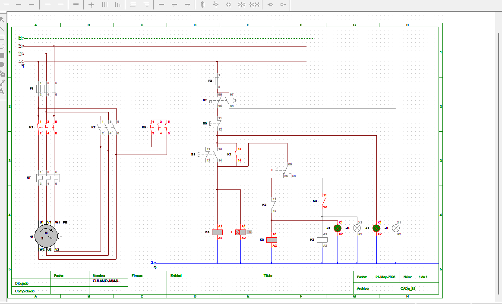
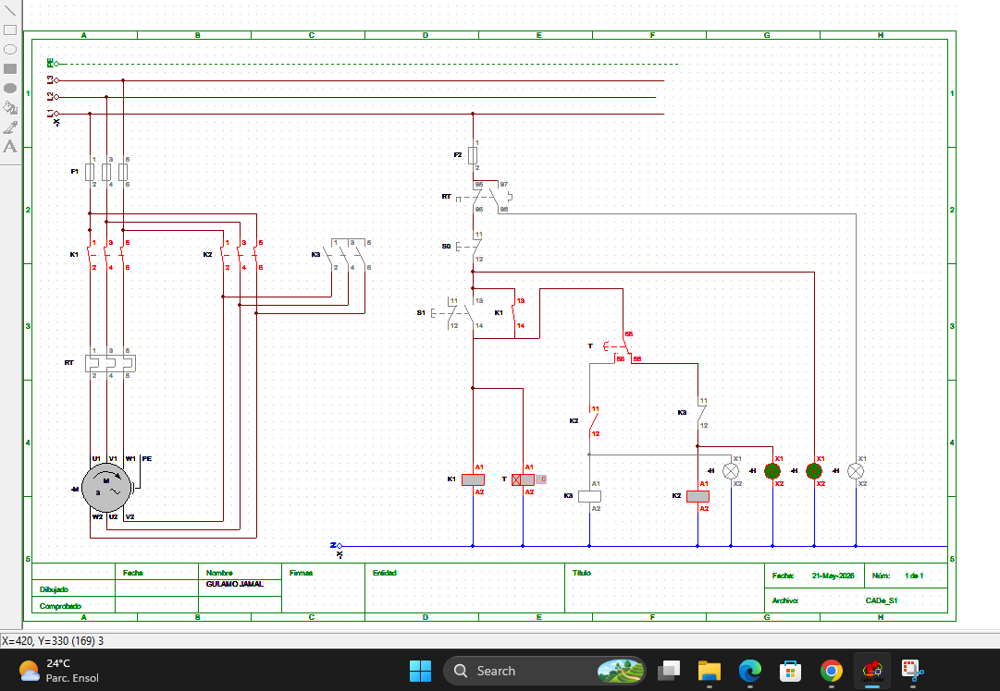
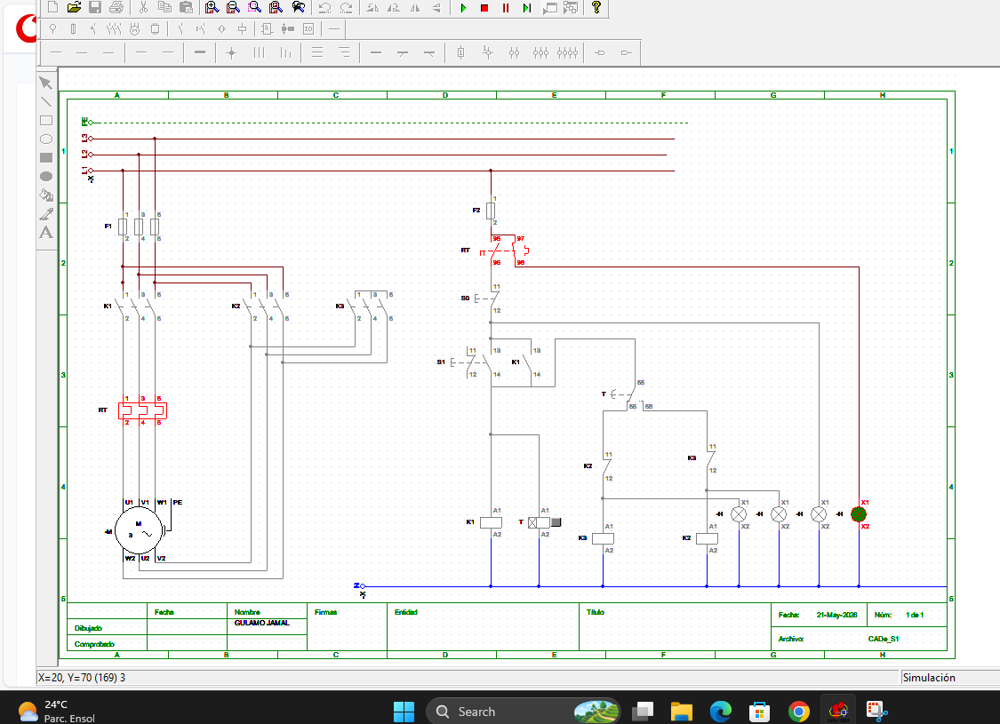
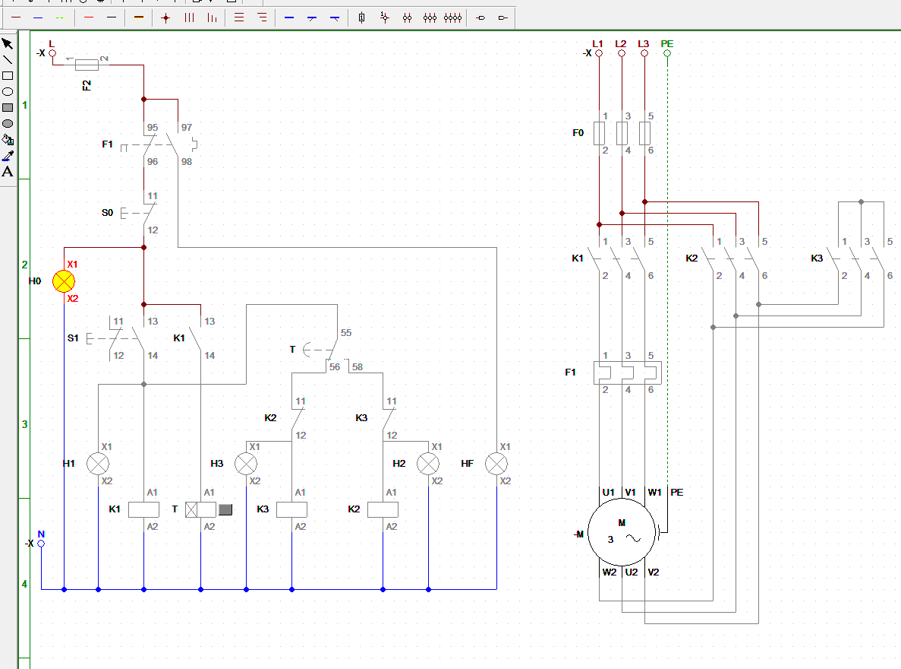
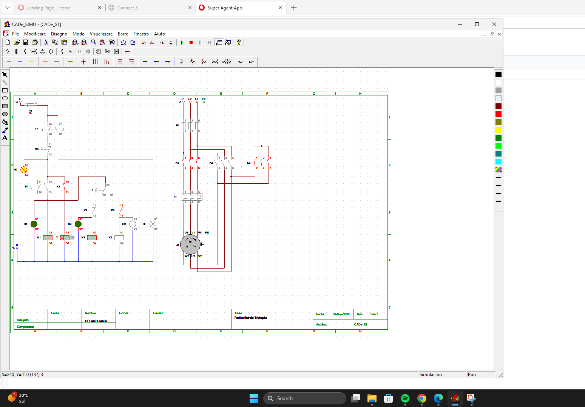
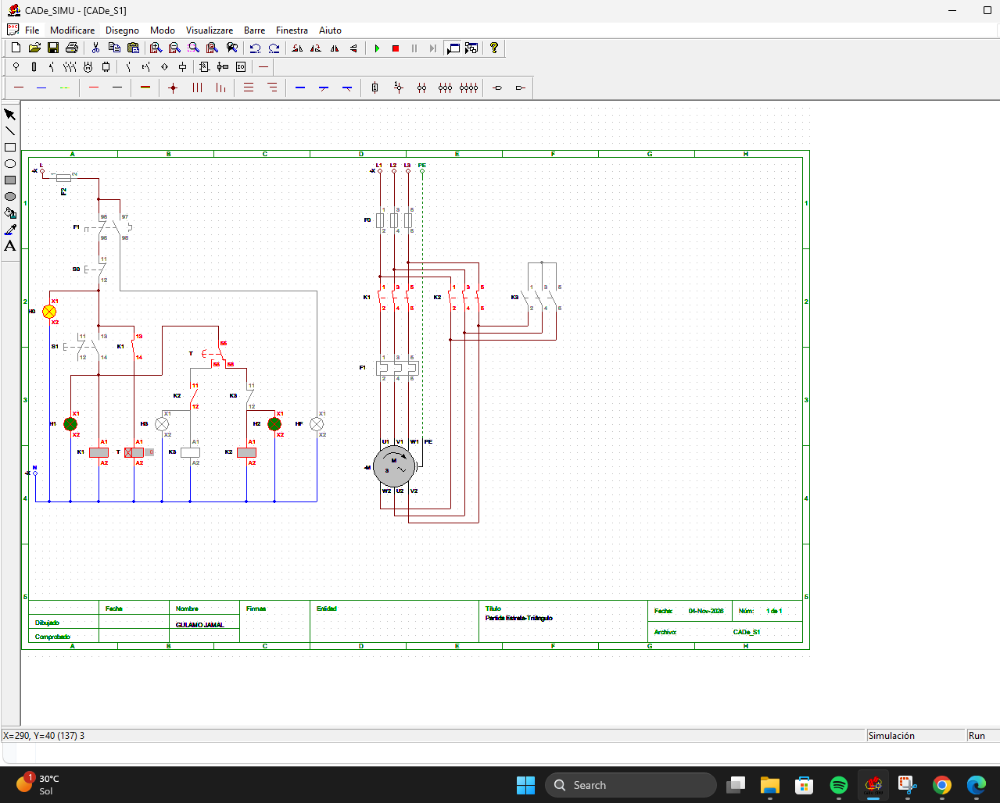
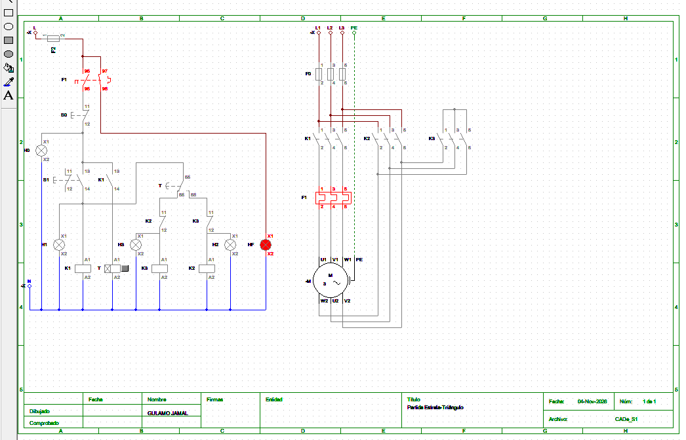

Partida Estrela-Triângulo
Comando e potência para partida estrela-triângulo de motor trifásico. O motor arranca em estrela e, após temporização, transfere automaticamente para triângulo.
Funcionamento
- Pressionar START
- O contactor principal K1 energiza
- O contactor estrela K3 energiza
- O motor arranca em estrela
- O temporizador inicia a contagem
- Após aproximadamente 10 segundos: K3 desliga, K2 liga
- O motor passa a operar em triângulo
Componentes
- K1 → Contactor principal
- K2 → Contactor triângulo
- K3 → Contactor estrela
- RT → Relé térmico
- T → Temporizador
- S0 → Botão STOP
- S1 → Botão START
Diagrama de Comando

Partida em Estrela (K1 + K3 activados)
Neste estágio inicial, o motor é alimentado em ligação estrela através do accionamento de K1 (principal) e K3 (estrela). Esta configuração reduz a tensão aplicada a cada enrolamento para aproximadamente 58% da tensão de linha, diminuindo a corrente de arranque e o esforço mecânico durante a partida.

Funcionamento do Arranque em Triângulo
Após a temporização do sistema, K3 (estrela) é desligada e K2 é accionado em conjunto com K1. Nesta fase, o motor passa a operar em ligação triângulo, recebendo tensão total de linha e funcionando à sua potência nominal.

Simulação de Sobrecarga no Motor
Este esquema demonstra a condição de sobrecarga no sistema estrela-triângulo. Quando a corrente ultrapassa o valor nominal, o relé térmico actua, interrompendo o circuito de comando e protegendo o motor contra danos térmicos e eléctricos.

Esquema Completo com Sinalização
Nesta versão, o circuito de força e o de comando aparecem lado a lado, com fusível de comando, relé térmico e intertravamento entre K2 e K3. Cinco lâmpadas mostram o estado do sistema: H0 (comando alimentado), H1 (K1 ligado), H3 (estrela), H2 (triângulo) e HF (falha por sobrecarga).
O contacto comutador do temporizador (55, 56 e 58) alimenta o ramo de K3 enquanto conta e o ramo de K2 depois. O contacto NF de K2 no ramo de K3 e o NF de K3 no ramo de K2 impedem que os dois liguem ao mesmo tempo.
- F0 → Fusíveis do circuito de força
- F2 → Fusível do circuito de comando
- F1 → Relé térmico
- K1, K2, K3 → Contactores principal, triângulo e estrela
- T → Temporizador com contacto comutador
- S0 → Botoeira STOP (NF)
- S1 → Botoeira START (NA)
- H0, H1, H2, H3, HF → Lâmpadas de sinalização
Vídeo da Simulação
O vídeo mostra o esquema completo a funcionar.
Estados do Esquema Completo
Com o sistema em repouso, só a lâmpada H0 está acesa: o comando está alimentado e à espera de START.

Ao premir S1, K1 e K3 ligam. O motor arranca em estrela, o temporizador começa a contar e acendem H1 e H3.

Terminada a contagem, o temporizador desliga K3 e liga K2. H3 apaga, H2 acende e o motor passa a triângulo, com K1 e K2 ligados.

Quando o relé térmico F1 actua, o seu contacto 95-96 abre e desliga todo o comando, e o 97-98 fecha e acende a lâmpada HF.

Segurança
Nunca permitir accionamento simultâneo dos contactores estrela e triângulo. O circuito deve possuir interbloqueio.
Aplicações
- Bombas industriais
- Ventiladores
- Compressores
- Motores trifásicos
Este projecto tem um artigo próprio no Brevemito, dedicado ao arranque estrela-triângulo em motores trifásicos.
Saiba mais no Brevemito